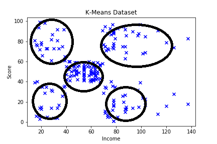
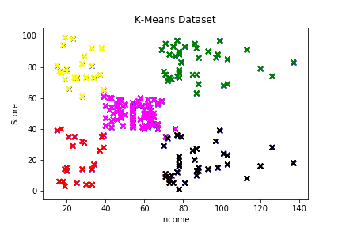
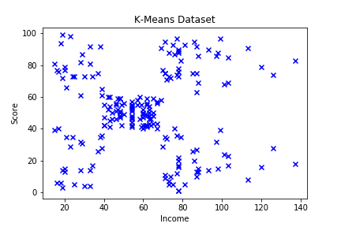

K-Means clustering is an Unsupervised Learning Algorithm. In this post, we will apply K-Means on a simple 2D dataset so that we can generate some real nice visualizations. We'll also understand what happens behind the scenes.
Our dataset looks like this.
Because this is a simple dataset, we can clearly locate that their are five clusters in this dataset. These clusters are,

But now we want to create an algorithm which will do this task for us. To follow along you can download this dataset from here.
K-Means Follows a simple algorithm :
Initialize k centroids on random positions anywhere in the dataset.
For each example in the dataset, find the closest cluster centroid and attribute that data point with that cluster centroid.
Now find the centroid of data points attributed to the same cluster centroid, and move the cluster centroid to that position.
Keep repeating the last two steps untill convergence is atained by the algorithm.
So let's write some code for doing all the steps of the algorithm step by step.
This well commented code above takes care of the initialization and setup steps of the algorithm. This also plots the initial state of the dataset. Which is,
This above code deals with the 'finding centroid' and 'move centroid' steps of the algorithm. After about 15 epochs, it was observed that the algorithm had totally converged as no more data points were changing colors. Here's the plot of the dataset after completion of the algorithm.

And here's a GIF image which will show us transition of our dataset from un-clusterd to fully clustered.

And here's the full code for the K-Means clustering algorithm written for this dataset.